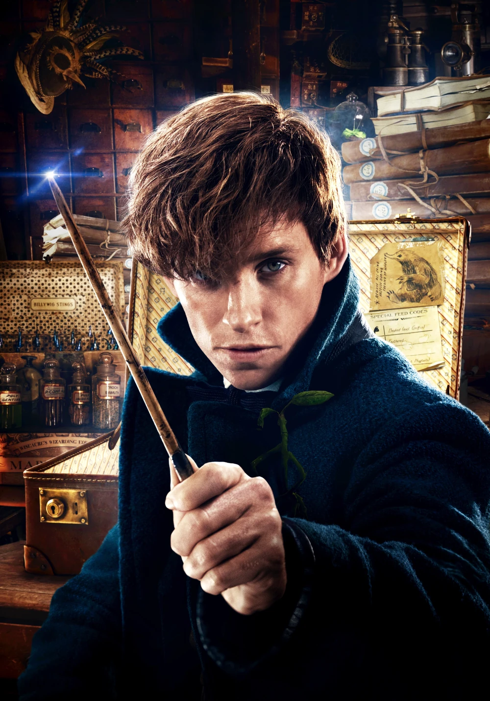
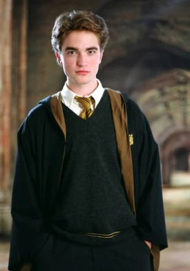
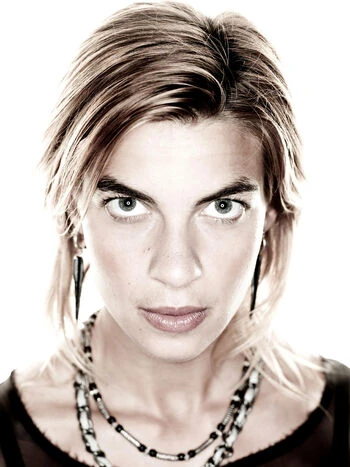

Założyciel - Helga Hufflepuff
Hufflepuff
Uczniowie
Jeden z czterech domów w Szkole Magii i Czarodziejstwa w Hogwarcie.
Jego założycielką była Helga Hufflepuff. Duchem opiekującym się domem
był Gruby Mnich. Mieszkańców domu nazywano w gwarze uczniowskiej
Puchonami. Uważa się, że jego uczniowie byli niezdarami, nie jest to
jednak prawda. Wychowankowie Hufflepuffu byli uczciwi, spokojni,
lojalni, sprawiedliwi, a przede wszystkim pracowici.
Newton Skamander Newton „Newt” Artemis Fido Skamander (Kawaler Orderu Merlina Drugiej Klasy) (ur. 24 lutego 1897 r.) — sławny magizoolog; autor książki Fantastyczne zwierzęta i jak je znaleźć (1927), za którą w 1979 roku otrzymał Order Merlina. Po ukończeniu Hogwartu, Skamander dołączył do Ministerstwa Magii, spędzając dwa lata w Biurze Przemieszczania Skrzatów Domowych, zanim dołączył do Wydziału Zwierząt. W 1918 roku Augustus Worme z Książnicy Obskurus zlecił mu napisanie książki opisującej wszystkie magiczne stworzenia na całym świecie. Ta stała się bestsellerem, czyniąc Skamandera cenionym ekspertem w dziedzinie magizoologii. Główny twórca Rejestru Wilkołaków (1947) oraz Zakazu Eksperymentalnej Hodowli (1965). Ożenił się z Porpentyną Goldstein, z którą miał co najmniej jedno dziecko. Na początku lat 90. XX wieku był już na emeryturze i mieszkał w Dorset. |
Cedrik Diggory Cedrik Diggory (ur. wrzesień/październik 1977 r. - zm. 24 czerwca 1995 r.) — czarodziej czystej krwi lub półkrwi. Najmłodszy znany członek rodziny Diggorych. Jedyny syn Amosa Diggory'ego i jego nieznanej z imienia żony. Od 1989 roku uczeń Szkoły Magii i Czarodziejstwa w Hogwarcie, przydzielony do Hufflepuffu. Kapitan i szukający drużyny quidditcha swojego domu. Uczestnik Turnieju Trójmagicznego jako reprezentant Hogwartu w rywalizacji z dwiema europejskimi szkołami magii: Akademią Magii Beauxbatons i Instytutem Magii Durmstrang. W 1994 roku został pierwszym reprezentantem Hogwartu w Turnieju Trójmagicznym. Drugim, nieoczekiwanym (i nadprogramowym) był o trzy lata młodszy uczeń Gryffindoru, Harry Potter. Wziął udział w trzech morderczych zadaniach i zdobył razem z Harrym Puchar Turnieju Trójmagicznego. Podczas pierwszego zadania zmierzył się ze smokiem i zdobył złote jajo, w którym ukryta była podpowiedź. Kolejne wyzwanie wyszło mu równie dobrze - wydobył z jeziora swoją dziewczynę Cho Chang i jako pierwszy wynurzył się na powierzchnię. Został zamordowany przez Petera Pettigrew w 1995 roku, podczas trzeciego zadania, odbywającego się w labiryncie, na rozkaz Lorda Voldemorta. Zmarł po trafieniu zaklęciem Avada Kedavra na cmentarzu, prawdopodobnie w Little Hangleton, w obecności Harry'ego Pottera. Harry sprowadził ciało Cedrika do Hogwartu i wziął udział w jego pogrzebie. Okoliczności śmierci Cedrika znali tylko najbliżsi przyjaciele Harry'ego i niektórzy nauczyciele, co rodziło wiele plotek i podejrzeń. Jednak ani rodzice Diggory'ego ani jego dziewczyna Cho Chang, nie mieli pretensji do Harry'ego. Przeciwnie, byli mu wdzięczni za sprowadzenie ciała z miejsca śmierci Cedrika. |
Nimfadora Lupin Nimfadora Lupin (z d. Tonks) ( 1 września 1972 r. - 31 sierpnia 1973 r. - 2 maja 1998 r.) - czarownica półkrwi i metamarfomag. Jedyne dziecko Teda i Andromedy Tonks. W latach 1984-1991 uczęszczała do Szkoły Magii i Czarodziejstwa w Hogwarcie, gdzie została przydzielona do Hufflepuffu. Była na tym samym roku co Gryfon Charlie Weasley. Po opuszczeniu Hogwartu przeszła, pod czujnym okiem Alastora Moody'ego, szkolenie na aurora, kwalifikując się w 1994 roku. W 1995 roku wstąpiła do odnowionego Zakonu Feniksa, pracując tajnie w Ministerstwie i pomagając chronić Departament Tajemnic. W czerwcu 1996 roku walczyła w Bitwie w Departamencie Tajemnic. W pewnym momencie Tonks zakochała się w Remusie Lupinie, jej koledze z Zakonu i wilkołaku, który uważał, że jest dla niej zbyt biedny, stary i niebezpieczny i dlatego odrzucił jej uczucia, chociaż czuł to samo. Po powrocie Lorda Voldemorta Tonks, razem z innymi aurorami, została wysłana do Hogsmeade w celu ochrony Hogwartu. Walczyła w Bitwie na Wieży Astronomicznej. Niedługo po tym, publicznie wyznała swoją miłość do Remusa. Tonks i Remus wzięli ślub latem 1997 roku. Była częścią Straży Przedniej i walczyła w Bitwie Siedmiu Potterów. Niedługo po tym Tonks zaszła w ciążę, a Remus zaczął się martwić, że jego dziecko również będzie wilkołakiem, jednak nie było tak, ponieważ odziedziczyło ono jedynie zdolności metamorfomagiczne po matce. Remus uciekł od Tonks, jednak wrócił za namową Harry'ego Pottera. Urodziła syna, Teddy'ego Remusa Lupina niedługo po Wielkanocy 1998 roku, a Harry Potter został jego ojcem chrzestnym. 2 maja 1998 r. Tonks walczyła w Bitwie o Hogwart i została zabita przez Śmierciożerczynię Bellatriks Lestrange, ciotkę Nimfadory. Śmierć Tonks pomściła Molly Weasley, zabijając Bellatriks. Po bitwie Teddy był wychowywany przez Andromedę i Harry'ego. |
|---|